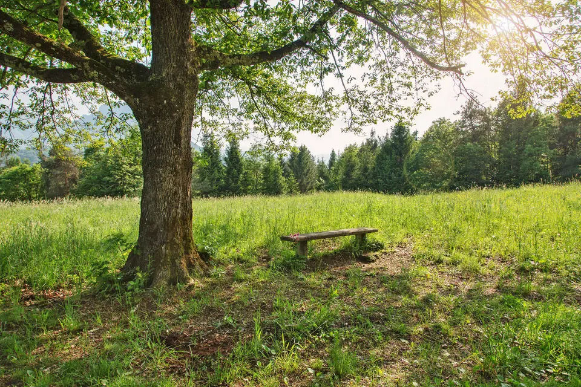
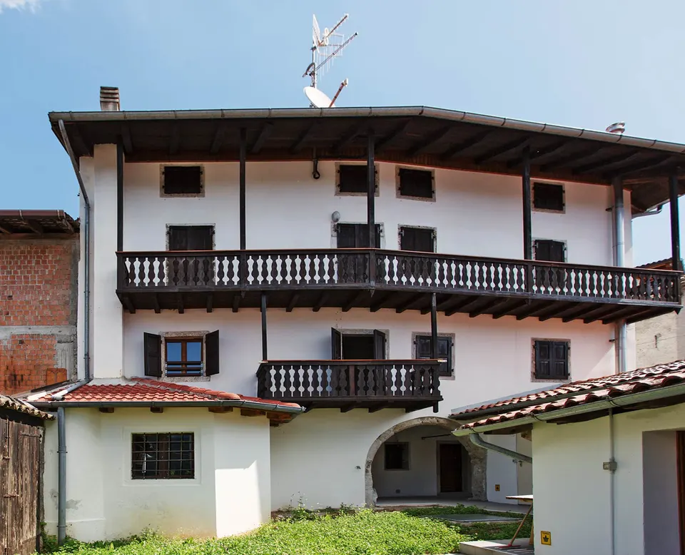
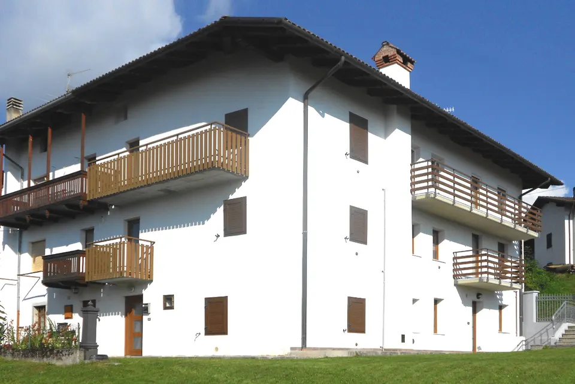
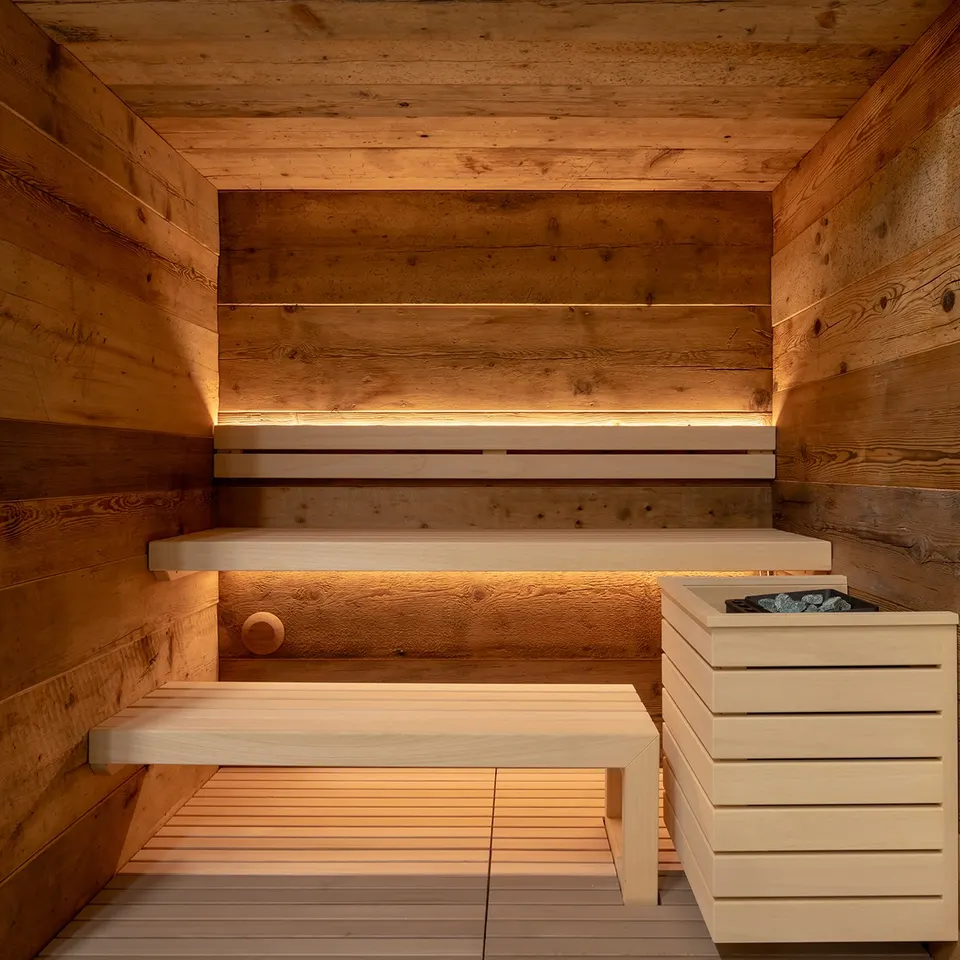

Albergo Diffuso in Socchieve · KarnienKarnien erleben wie ein Einheimischer.
Ferienhäuser und Ferienwohnungen in den Dörfern von Socchieve, mit dem Service eines Hotels. 18 km von Sauris und eine halbe Stunde von den Friauler Dolomiten entfernt.
Kein Hotel mit vielen Zimmern. Ein ganzes Dorf, das Ihnen seine Häuser öffnet.
Ein Albergo Diffuso – wörtlich ein „verstreutes Hotel“ – bietet den Service eines Hotels mitten in einem bewohnten Ort. In Socchieve schlafen Sie in einem echten Dorfhaus, trinken Ihren Kaffee mit den Menschen, die hier leben, und starten zu Fuß direkt auf die Wanderwege Karniens. Gast und Dorfbewohner zugleich.


Wählen Sie Ihr Haus im Dorf.
Vom Studio für zwei bis zur Villa für Gruppen bis 21 Personen. Filtern Sie nach Dorf oder Bettenzahl.
Bis zu 18 Gäste360°Casa Vanda
Die ganze Villa aus dem 18. Jahrhundert in Viaso, aus Stein mit Holzbalkonen: fünf Wohnungen für große Familien und Gruppen bis 18 Personen.
 Bis zu 21 Gäste360°
Bis zu 21 Gäste360°Casa Ernesto da Rosuline
 Bis zu 9 Gäste
Bis zu 9 GästeCasa Pradin
 Bis zu 4 Gäste
Bis zu 4 GästeCasa Ai Pascoli
 Bis zu 6 Gäste
Bis zu 6 GästeCasa Vanda Iris
 Bis zu 4 Gäste
Bis zu 4 GästeCasa Vanda Bucaneve
 Bis zu 4 Gäste
Bis zu 4 GästeCasa Vanda Papavero
 Bis zu 5 Gäste
Bis zu 5 GästeCasa Vanda Genziana
 Bis zu 4 Gäste
Bis zu 4 GästeCasa Vanda Ortensia
 Bis zu 5 Gäste
Bis zu 5 GästeErnesto da Rosuline 1
 Bis zu 5 Gäste
Bis zu 5 GästeErnesto da Rosuline 2

Bis zu 5 GästeErnesto da Rosuline 3
 Bis zu 2 Gäste
Bis zu 2 GästeErnesto da Rosuline Terra

Bis zu 5 GästeCasa Rovedo
 Bis zu 8 Gäste360°
Bis zu 8 Gäste360°Casa dal Miedi
Sie buchen direkt im offiziellen Buchungssystem von Col Gentile, ohne Vermittler.
Acht Dörfer, ein Tal.
 486 m ü. M.Mediis
486 m ü. M.Mediis SocchieveDilignidis
SocchieveDilignidis 449 m ü. M.Nonta
449 m ü. M.Nonta 412 m ü. M.Socchieve
412 m ü. M.SocchieveNehmen Sie sich Zeit.
Spaziergänge und Wanderungen, Radtouren, romanische Kunst und die großen Klassiker Karniens. Los geht es direkt vor unseren Häusern.
01Wandern
Vier Rundwege ab den Dörfern und die Überschreitung des Col Gentile auf dem CAI-Weg 235.
Zu den Touren 02Radfahren
Die MTB-Strecke von Mediis und die Runde über den Passo Rest – der Zoncolan ist nur 24 km entfernt.
Mehr erfahren 03
03Kunst und Kultur
Mehr erfahren 04Karnien entdecken
Sauris und sein Schinken, die Lumiei-Schlucht, Forni di Sopra und das Val Pesarina: alles in weniger als einer Stunde erreichbar.
Mehr erfahrenSauna und Waldbaden in Socchieve.
Nach einem Tag auf den Wanderwegen oder auf dem Rad lockert die Sauna die Muskeln; in den Wäldern rund um die Dörfer lehrt Sie Petra beim Shinrin-yoku, langsamer zu werden. Online buchbar mit sofortiger Bestätigung; eine Kreditkarte dient als Garantie.
 15 € · pro Person
15 € · pro PersonWaldbaden
Shinrin-yoku oder Waldbaden: ein langsames, sinnliches Eintauchen in die Wälder Karniens, das Körper und Geist erholt.
Entdecken und buchen
20 € · pro StundeSauna
Trockene Wärme nach einem Tag auf den Wanderwegen, so lange Sie möchten.
Entdecken und buchenSauna in Karnien
Sauna stundenweise für die ganze Gruppe, pauschal 20 € pro Stunde, ab zwei Stunden: der beste Abschluss nach einer Wanderung, einer Mountainbike-Tour oder einem Tag auf den Pisten von Forni di Sopra. Preise und Zeiten
Waldbaden (Shinrin-yoku)
Waldbaden mit Petra in den Wäldern von Socchieve: rund zwei Stunden langsames, sinnliches Eintauchen in die Natur, Gruppen bis 6 Personen, 15 € pro Person, Treffpunkt an der Rezeption in Mediis. So funktioniert es
Buchen Sie Ihre Auszeit
Sofortige Bestätigung per E-Mail · Kreditkarte als Garantie erforderlich · lieber persönlich? +39 0433 819934 · info@albergodiffusosocchieve.it
Im Herzen Karniens, nah an allem.
Zwischen den Friauler und den Pesariner Dolomiten, an der SS52 von Tolmezzo nach Forni di Sopra. Fahrstrecken ab der Rezeption in Mediis.
- Ampezzo4 km · ca. 5 min
- Tolmezzo17 km · ca. 25 min
- Sauris und sein See18 km · ca. 25 min
- Forni di Sopra26 km · ca. 35 min
- Val Pesarina (Pesariis)25 km · ca. 40 min
- Monte Zoncolan24 km · ca. 50 min
- Autobahnausfahrt A23 Carnia27 km · ca. 35 min
- Udine65 km · ca. 1 h 10
- Flughafen Triest103 km · ca. 1 h 35
- Lignano Sabbiadoro127 km · ca. 2 h 05
Vor der Abreise.
Was ist ein Albergo Diffuso?
Eine Unterkunft, deren Zimmer und Wohnungen auf die Häuser eines Dorfes verteilt sind, statt in einem einzigen Gebäude zu liegen. Im Albergo Diffuso Socchieve „Col Gentile“ wohnen Sie in Häusern und Wohnungen in den Dörfern Karniens, mit dem Service eines Hotels und einer zentralen Rezeption in Mediis.
Wo liegt Socchieve?
Socchieve liegt in Karnien im oberen Friaul (Provinz Udine), zwischen den Friauler und den Pesariner Dolomiten, an der SS52 von Tolmezzo nach Forni di Sopra. Ampezzo ist 4 km entfernt, Tolmezzo 17 km, Sauris 18 km und Forni di Sopra 26 km.
Wie komme ich zum Albergo Diffuso?
Mit dem Auto: Autobahn A23, Ausfahrt Carnia, dann die SS52 Richtung Tolmezzo und Forni di Sopra (rund 27 km ab der Ausfahrt). Aus dem Cadore kommt man über die SS52 ab Forni di Sopra, aus dem Gebiet von Pordenone über die SS552 über den Monte Rest ab Tramonti. Der nächste Flughafen ist Triest (rund 100 km), Udine ist 65 km entfernt.
Wie viele Personen finden in den Häusern Platz?
Vom Studio für zwei im Ernesto da Rosuline Terra über Wohnungen für 4–8 Personen bis zu ganzen Häusern für Gruppen: Casa Pradin (9 Betten), Casa Vanda (18) und Casa Ernesto da Rosuline (21).
Sind Haustiere erlaubt?
Ja, in mehreren Häusern: Die Wohnungen von Casa Vanda (Iris, Genziana, Bucaneve, Papavero), die von Casa Ernesto da Rosuline, Casa dal Miedi und Casa Ai Pascoli sind haustierfreundlich. Bitte geben Sie es bei der Buchung an.
Was kann man in Socchieve unternehmen?
Wandern auf Wegen direkt ab den Dörfern, Mountainbiken auf der Strecke von Mediis, Rennradfahren über den Passo Rest, romanische Kunst in der Kirche San Martino. In einer halben Stunde erreichen Sie Sauris, die Friauler Dolomiten (UNESCO-Welterbe) und Forni di Sopra, im Winter auch zum Skifahren.
Gibt es Sauna und Wellness?
Ja: Die Sauna wird stundenweise für die ganze Gruppe gebucht (20 € pro Stunde, mindestens 2 Stunden), und das Waldbaden (Shinrin-yoku) mit Petra dauert rund zwei Stunden, für Gruppen bis 6 Personen zu 15 € pro Person, mit Treffpunkt an der Rezeption in Mediis.
Wie buche ich?
Online im offiziellen Buchungssystem von Col Gentile, mit Verfügbarkeit und Preisen in Echtzeit, oder per E-Mail an info@albergodiffusosocchieve.it bzw. telefonisch unter +39 0433 819934.
Die Berge, unter Menschen.
Lassen Sie sich vom Leben in den Bergen begeistern, mitten unter den Menschen und in der Natur Karniens.
Fragen Sie uns zu Ihrem Aufenthalt.
Für Informationen zu Häusern, Reisezeiten und Aufenthalten in Socchieve schreiben Sie uns. Die aktuelle Verfügbarkeit sehen Sie immer im Buchungssystem.
Mit * gekennzeichnete Felder sind Pflichtfelder. Eine Anfrage ist keine Buchung.